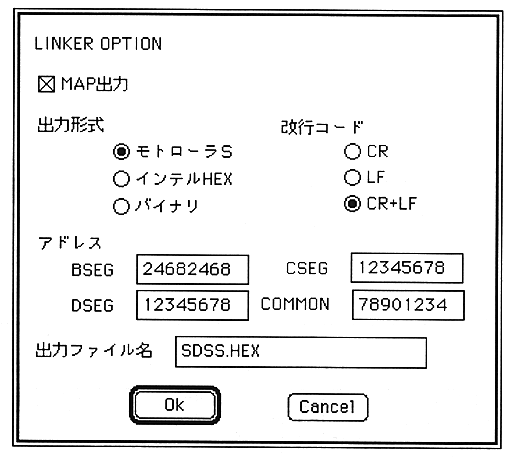

MAP output
Check when a MAP file is needed.
When the link ends normally, a file with the extension part of the output file name ".MAP" is output.
Output format
Specify the format of the HEX file to be output.
Motorola S, Intel HEX, and binary are mutually exclusive and only one can be specified.
Line feed code
Specify the line feed code of the HEX file to be output.
Only one of CR (0x0d), LF (0x0a), and CR + LF (0x0d0a) can be specified.
Various addresses
Set the segment start address in hexadecimal.
Although 8 digits can be entered, only the last 4 digits are valid for Z80.
Output file name
Set the file name to output the link result.